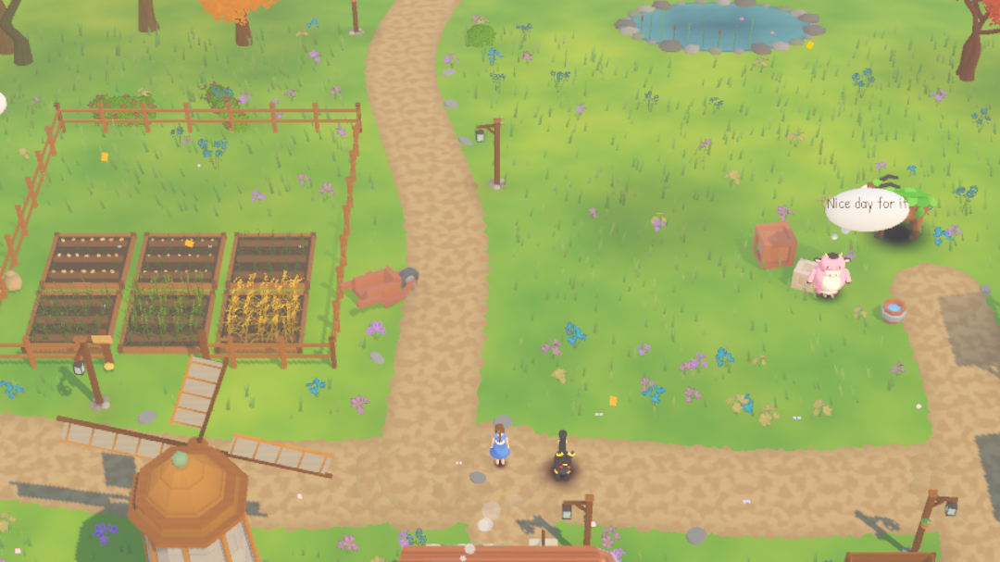
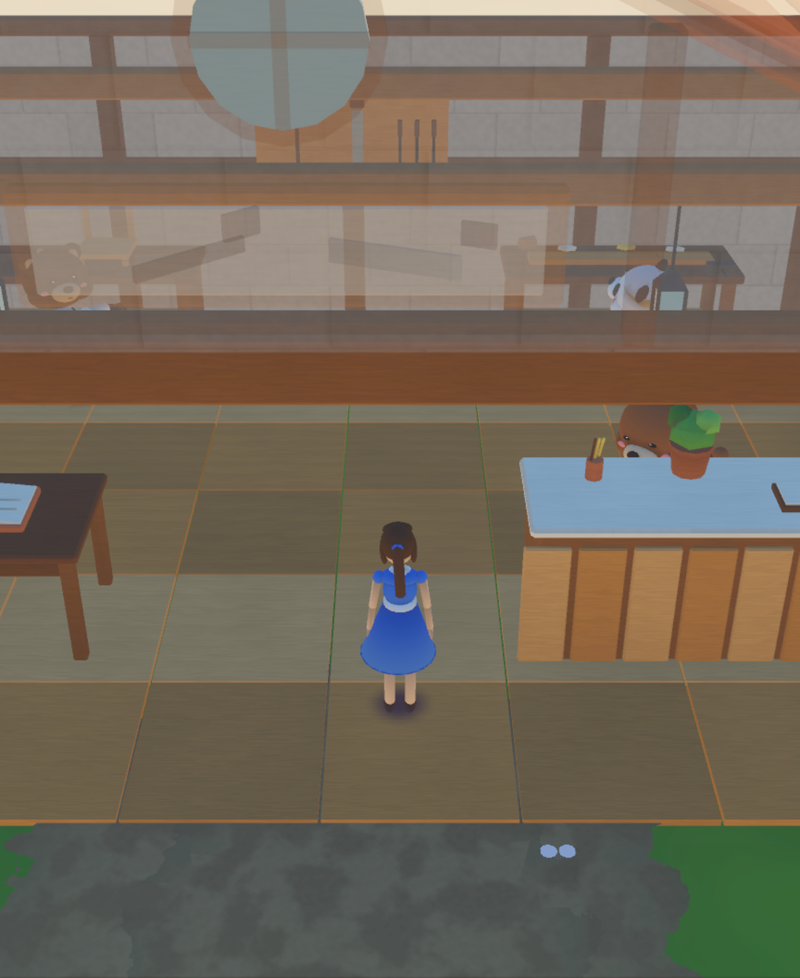
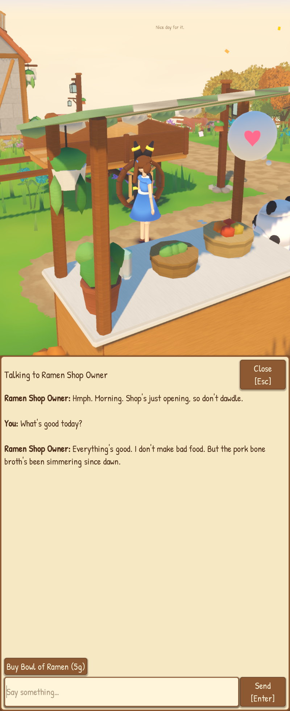
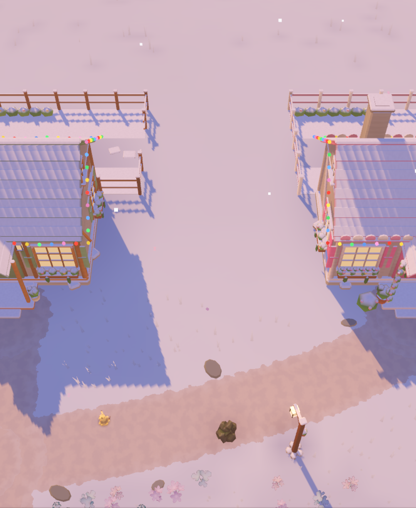

My job: designer
I wrote the story arc, including the mystery and how it ends. I decide how the game plays and looks: crops grow in 5 minutes, Pokémon never talk (full stop), and the farm Pokémon are the guides but never explain anything. I work through long lists of design questions, send things back when they're wrong, and make my own avatars, creatures and furniture in Maker Studio. I also have an app now just for developing new ideas (see How it's built).
Papa's job: tech support, basically. He builds what's in the design with Claude Code and keeps the servers and phones running. He also makes the technical calls, plus a few others I'll allow (the animal shopkeepers were his idea, and so was the furniture workshop's chat ordering).
The pitch, in one breath
My sister Chloe and I share one farm at the edge of a forest. You plant crops, look after Miltank, Wooloo and Combee, turn it all into food and furniture, decorate your house, and chat with the villagers in town, who are powered by Claude, so you can type literally anything at them. Meanwhile the Pokémon keep wandering off towards the same bit of forest. That's not a bug. That's the story.
There's a lot. Sorry.

The game
The farm, the Pokémon, the houses, the holidays and the glade.

The workshop
Describe a piece of furniture and the game builds it. In 3D. For real.

How it's built
ChatGPT, Claude Code, Godot, Blender, an iMac and the NAS.

Updates
What's changed, roughly by the day, because it changes daily.
Where's the code?
Closed source for now, because it's nowhere near done and I'd rather not have strangers judging my half-built barn. Once it's finished, I plan to open source it on my GitHub.